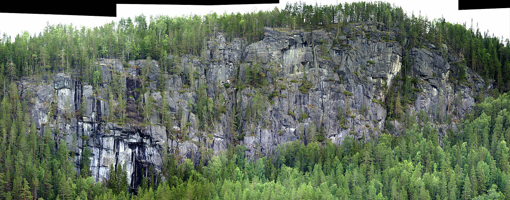

Lat: 64.13869555099743 Long: 16.28276824951172
<div style="float:right; padding: 2px; border: solid 1px gray"> <googlemap lat="64.13869555099743" lon="16.28316824951172" zoom="8" type="map" width="250" height="200"> 64.13869555099743,16.28276824951172,Råberget </googlemap> </div> Råberget är ett högt och imponerande berg ca 7 mil från
Offerhällan
, i Rörström. Det är i princip helt oklättrat (det ryktas om att det gjorts två aid-leder, samt att det på vintern isklättras på det av lokala förmågor).
Väggen är ca 70 till drygt 100 meter hög och bjuder på både sva-delar och imponerande överhäng modell Inlandsbanelok. Sprickan mitt på berget torde vara klättringsbar i sin helhet med en avslutning i en överhängande dieder.
Nedanför berget finns ett stenfält med åtminstone 3-5 bra boulderstenar.
Umeåklättrare och Strömsundsbor, go get it. Det behövs säkert lite omväxling efter allt tragglande på Offerhällan.
Kategori:Oklättrat
Kategori:Trad
Kategori:Is
Kategori:Jämtland